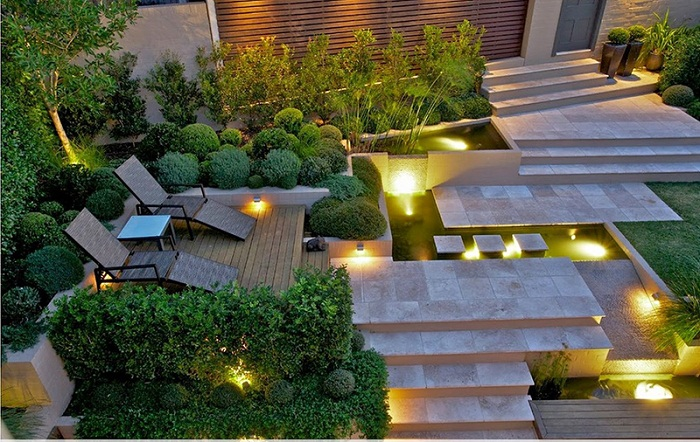

Tổng quan dịch vụ
Dịch vụ thiết kế cảnh quan của Green Care tập trung tạo nên không gian xanh hài hòa, thẩm mỹ và bền vững. Chúng tôi khảo sát thực tế, tư vấn bố trí cây xanh – tiểu cảnh phù hợp với điều kiện tự nhiên và nhu cầu sử dụng, giúp nâng cao giá trị không gian sống và mang lại môi trường gần gũi với thiên nhiên.
Lợi ích mang lại
- Không gian sống xanh, đẹp và thư giãn hơn
- Tối ưu công năng sử dụng và thẩm mỹ cảnh quan
- Tăng giá trị và sức hút cho công trình
- Giải pháp bền vững, thân thiện môi trường
Công việc thực hiện
- Khảo sát hiện trạng và tư vấn ý tưởng thiết kế
- Lên bản vẽ bố trí cảnh quan phù hợp không gian
- Lựa chọn cây xanh, vật liệu trang trí
- Thi công và hoàn thiện cảnh quan
- Hướng dẫn chăm sóc, bảo trì sau thi công